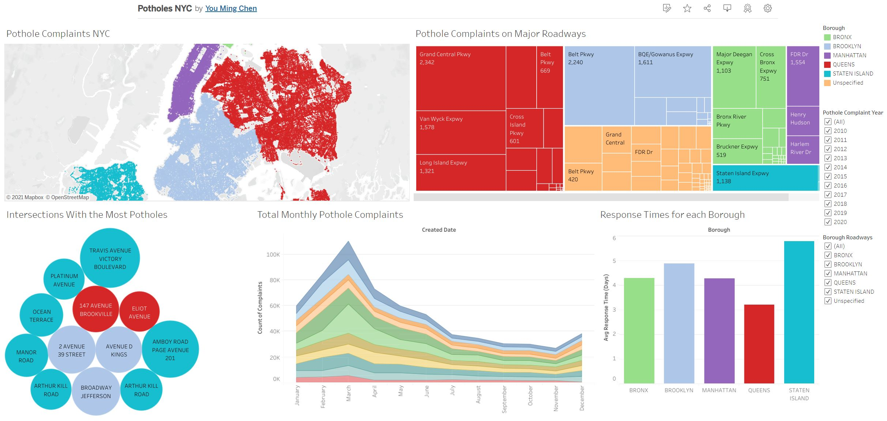
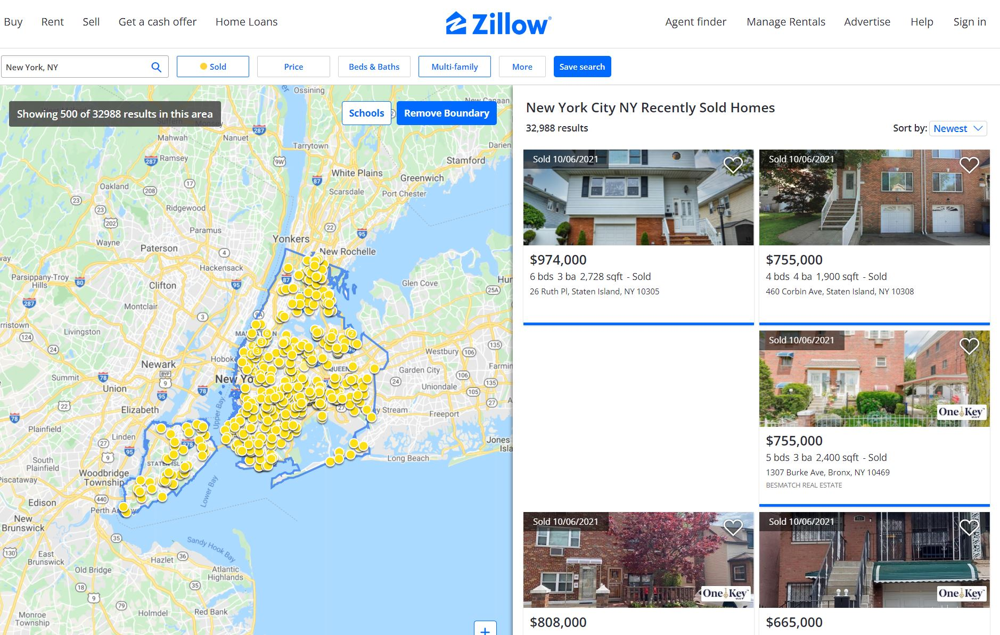
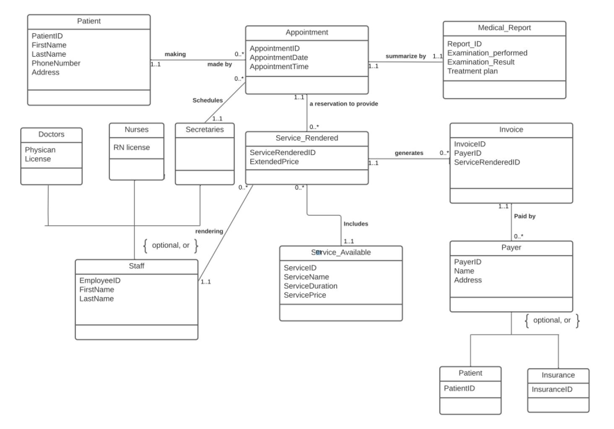
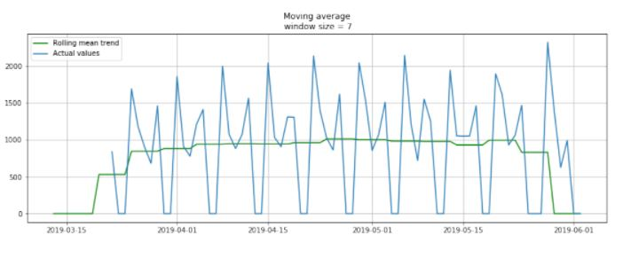
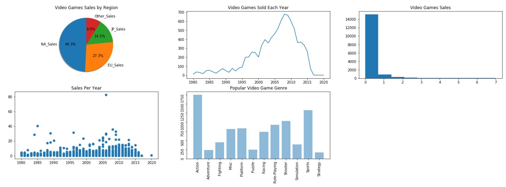

This is a dashboard project created with Tableau. The data set for this visualization is the NYC 311 Potholes Complaints data from NYC Open Data. The purpose of this project was to analyze what are the worst roads with the most pothole complaints, when do pothole occur the most, and how long does it take for each borough to respond to each pothole complaints.

This is a dashboard project created in Tableau. Data was from the Motor Vehicle Collisions on NYC Open Data. The goal for this project was to determine what is the leading cause of vehicle collision, when does vehicle collision occur the most during the day, and which location has the most amount of vehicle collisions.

This is a data warehousing project and DBT was used to transform and load the data. The two data set that was transformed and loaded to the data warehouse was the 311 Smoking Complaint Data and the NYC Weather Data. The data warehouse was hosted on Google Cloud. The purpose of this project was to determine if weather has an impact on smoking complaints. After the data warehouse was setup, we connected Tableau to our data warehouse on Google Cloud and created dashboard with visualizations on how weather impacted smoking complaints.

This is a script written in Python to scrape recently sold property data in NYC. Selenium was utilized to access Zillow webpage, once the page was loaded BeautifulSoup was utilized to scrape out the necessary information. The information is saved on to a Pandas Dataframe within the Python script and eventually exported to a CSV file.

This is a relational database built in Microsoft Access where all the information for the doctor office will be kept. These information includes doctors information, nurses information, patients information, visit information, appointments and invoicing. SQL statements are used to create tables in the database. The database is populated with the use of SQL insert statements. A navigation form was created to help end users open forms and run reports in the data base without having much Access knowledge.

This is a Pitney Bowes data challenge competition that was hosted virtually. The challenge for this project was to create a data model to predict the parcel volumes for Pitney Bowes’s facilities over the next 5 days. The challenge was done with Python and the library used was Pandas, NumPy, Matplotlib, and sklearn.

This is a Python data visualization assessment and the data for this assessment was video games sales from Kaggle. The goal for this assignment was to understand which regions has the most video game sales, which year had the most sales, and which genre of video game is the most popular. The different visualizations are put into a dashboard for the user to view.

This is a system design project for a house watching business. For this project I was a Business Analyst and created multiple documents for the project. These documentations include the Business Requirement Document, Activity Diagram, Data Model, Wireframes, and Use Case Statements.